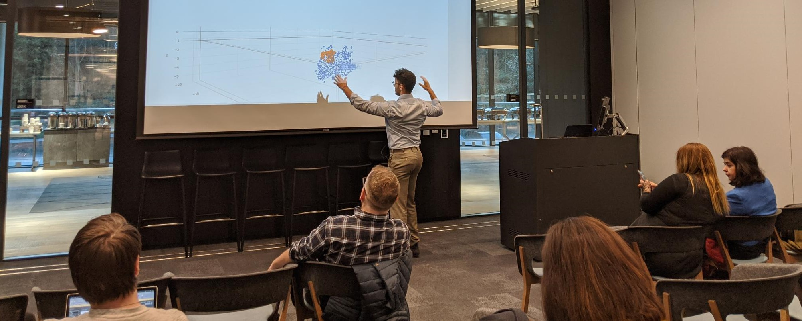

Mission & Identity
Building AI systems that operate at production scale — and asking, at every step, whether they serve humanity or merely optimise for it.
Combining rigorous applied science with philosophical discipline. The best engineering decisions require slowing down — the friction is the point.
Raised in Nîmes, in the south of France, with Moroccan roots. Disciplined by the tatami. Drawn equally to algorithms, literature, and the open sea.
Language models anticipate our next words. Recommendation algorithms outpace our desires. Autonomous agents are increasingly making decisions on our behalf.
Grounded in years of building the systems themselves — from developing large-scale NLP solutions at Microsoft to teaching AI architectures at EPITA Paris — La paresse de penser steps back to observe a profound shift in our relationship with technology. It explores the subtle process through which we consent, often unknowingly, to let machines do the thinking for us. Instead of blaming the algorithms, the book examines our own tendency to trade cognitive effort for seamless convenience.
Neither a doomsday warning nor a naive tech utopia, this book is a manual for cognitive self-defence. An invitation to slow down, design for friction, and fiercely reclaim what we choose to stop thinking about.
About
I am a Senior Applied Scientist at Microsoft, based in Seattle, where I architect NLP models and AI systems within the Microsoft 365 ecosystem — work that has produced 9 patents spanning intelligent personalisation, behavioural anomaly detection, and human well-being in the workplace.
I trained as an engineer at Télécom Paris and hold a master's in Machine Learning from KTH Stockholm, with a focus on deep learning architectures. From 2021 to 2023, I taught advanced NLP and large language model architectures at EPITA Paris before relocating to the US.
Outside the lab, discipline comes from the tatami. I hold a black belt in Judo and am a former two-time national champion in Karate Jutsu. I surf the waters of the Pacific Northwest. And I write — most recently a book on why the age of intelligent machines demands, more than ever, that we think for ourselves.


Intellectual Property & Research
Methodology for intelligent information streamlining in collaborative virtual spaces.
Adaptive systems that learn user behaviour to optimise high-performance workflows.
A linguistic AI model fostering inclusivity through accurate global name recognition.
Personalised memory systems for computing interfaces to enhance human recall.
AI-driven system to detect and enhance the quality of virtual collaboration.
Contextual AI for generating appropriate, personalised out-of-office communications.
Next-generation NLP for processing feedback while maintaining strict privacy compliance.
Detecting and mitigating digital fatigue through AI-driven behavioural analysis.
Behavioural AI for real-time ergonomic and posture guidance in computing environments.
Exploring hyperbolic geometry for better hierarchical data representation in machine learning.
From the Blog
The em dash and the end of intention: why I wrote "The laziness of thinking"
A typographic detail in an intimate message — an overabundance of em dashes — set everything in motion. The story behind my forthcoming essay.
Read →What LLMs Taught Me About Human Mental Laziness
The mechanics of next-token prediction turn out to be a remarkably good model of how humans cut corners.
Read →Online Projects
A storytelling platform that turns heartfelt memories into five-chapter digital gifts — delivered via a personalized private URL, meant to be read slowly. Seven occasion templates: proposals, birthdays, anniversaries, and more.
Visit tonjour.com →